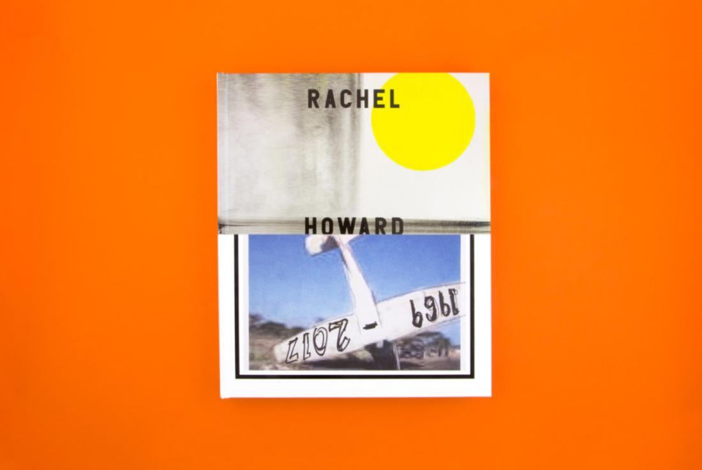
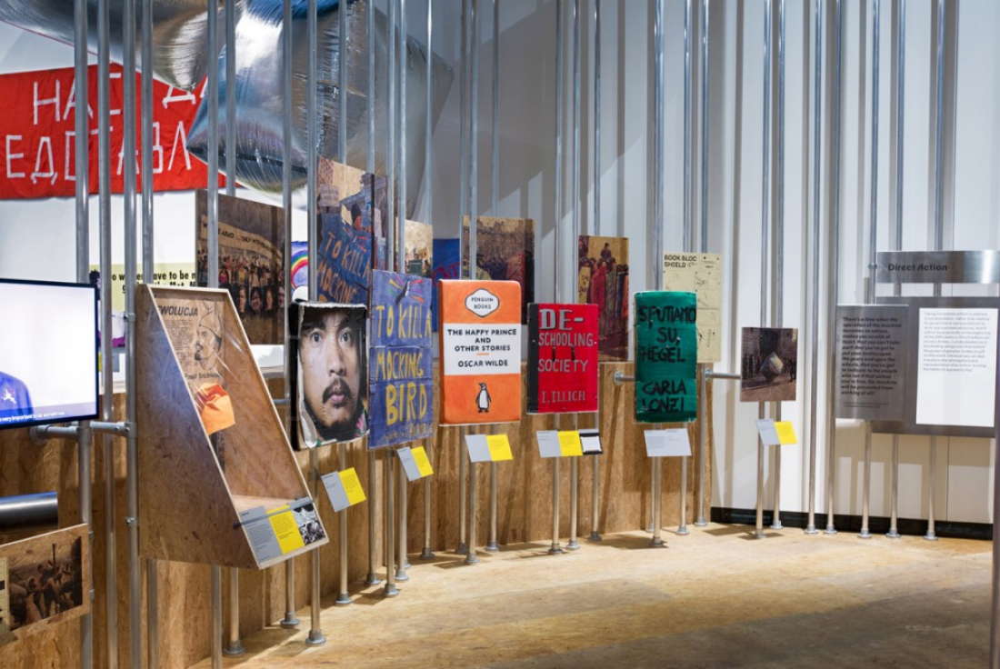

California: Design Freedom은 런던의 Design Museum에서 열린 전시회로, 1960년대 반체제 문화의 이상이 어떻게 실리콘 밸리의 기술 문화로 변화했는지, 그리고 어떻게 'Designed in California'가 세계적인 현상이 되었는지를 탐구했다. 반브룩은 전시 그래픽과 그에 수반되는 카탈로그를 디자인하도록 의뢰 받았다.
카탈로그와 전시 디자인은 60년대 반체제 문화의 그래픽과 최근 기술과 디지털 발전의 시각 언어에 똑같이 영향을 받았다. 디자인은 깨끗하고 '모더니즘'인 레이아웃과 타이포그래피로 해석되는 캘리포니아와 거의 동의어인 유토피아적 사고방식을 표현하는 것을 목표로 한다.
전시회의 마케팅 자료는 항상 따뜻한 파스텔 색상으로 해질녘에 표현되는 태양을 주요 모티브로 한다. 이 시각은 개인주의와 자본주의를 통해 획득한 '자유' 개념과 관련된 멈출 수 없는 낙관주의를 전복하는 것을 목표로 한다.
카탈로그와 전시 그래픽 전반에 걸쳐 사용된 점무늬는 디지털 픽셀뿐만 아니라 60년대 포스터의 리소그래피 하프톤을 참조한 것이다.
Rachel Howard
2018 / 블레인|남쪽 / 런던

런던 남부 미술관(Blain | Southern Art gallery)에 데어 쿠스(Der Kuss)의 개관과 동시에 레이첼 하워드(Rachel Howard)에 대한 모노그래프. 이 책은 최근 작품들을 자세히 설명하고 2013년으로 거슬러 올라가는 예술 작품들의 포괄적인 개요를 제공한다. 레이첼의 그림과 기록물 이미지에 존재하는 갈등, 모순, 상반된 주제들에 영향을 받아 이 책은 순수한 진실 추구뿐만 아니라 인간의 잔인함의 본질을 탐구한다.
Disobedient Objects
2014 / 빅토리아 앨버트 박물관 / 런던

불복종 오브제는 런던 V&A에서 사회 변화를 위한 운동에서 사물의 강력한 역할을 조사한 전시회였습니다. 반브룩은 홍보, 카탈로그, 전시 정체성과 디스플레이 그래픽을 디자인했습니다.
정체성은 일상적인 사물들을 사회 변화의 무기로 변화시키는 것을 중심으로 한다. 전시 제목에 초점을 두기보다는, 그것을 정치적 행동주의의 대상으로 어떻게 변화시킬 것인가에 대한 지시와 함께 겹쳐진 평범한 사물의 실루엣이라는 사회적 행동에 대한 요구가 중심을 이룬다.
이 디자인은 그 자체로 북한 독재 정권에 대한 정치적 비판인 바이러스 폰트 서체 독트린을 사용한다. 독트린의 대체 캐릭터 세트는 활동가, 예술가 그리고 메이커의 말을 하는 두 번째 목소리를 제공했고, 이 목소리는 더 전통적인 박물관 이야기와 나란히 말했다.
사용 설명서의 실용주의적인 미적 감각은 전시회에 등장하는 물건들을 만드는 그림이 있는 안내서들로 이어진다. 이 안내서들은 초대장에 적용되었고 전시회 자체에서 찢어진 시트뿐만 아니라 이용할 수 있다.
입구의 전시 제목은 갤러리 공간 입구에 걸려 있는 거꾸로 된 군중 통제 울타리에 부착된 케이블 타이로 만들어졌다. 짐꾼 갤러리의 문은 바리케이드의 역사를 대규모로 표현한 것이 지배적이다. 각각의 패널은 프랑스 혁명에서부터 아랍의 봄과 우크라이나에서 볼 수 있는 최신 바리케이드에 이르기까지 한 가지 특정한 순간을 특징으로 한다.
각 섹션 패널은 천, 스테인리스 스틸, 판지, 플라스틱, 방수포 및 OSB 보드와 같은 값싸고 일상적이며 전시된 물건을 만드는 데 가장 중요하게 사용되는 독특한 재료에 인쇄됩니다.
목록의 경우, 각 에세이는 책 표지와 포스터와 동일한 무기 징집 대상인 (불복종) 대상의 목록으로 시작한다. 책 전체에 동일한 대상에 밑줄이 그어져 있어 본문의 대체 읽기를 제공한다. 불복종 인용문도 조잡하게 본문을 중단시켰다.